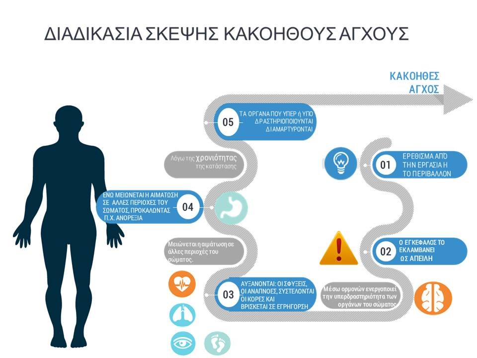

Νιώθετε πιο νευρικοί και πιο ανήσυχοι από το συνηθισμένο; Ξεκινήστε άμεσα το online ερωτηματολόγιο για να δείτε τα επίπεδα άγχους σας. Μέσω ενός επιστημονικά αποδεδειγμένου τεστ, θα κατανοήσετε το επίπεδο άγχους και το πόσο επικίνδυνο αποτελεί για την υγεία σας .
Αισθάνεστε αδύναμοι και κουράζεστε εύκολα; Αντιλαμβάνεστε την καρδιά σας να χτυπάει πιο γρήγορα από το κανονικό; Έχετε ενοχλήσεις από ζαλάδες; Πραγματοποίηστε τη μέτρηση για να δείτε τα ποσοστά άγχους σας.
Εδώ θα βρείτε έξυπνους τρόπους αντιμετώπισης κατά του άγχους όπως ειδικές ασκήσεις αναπνοής και διάφορες χαλαρωτικές κινούμενες εικόνες και ήχους που θα συμβάλουν στην άμεση χαλάρωση σας.
Τι είναι το Άγχος και πώς θα το αντιμετωπίσουμε;
Μάθετε περισσότερα πράγματα για το άγχος και πώς θα το αντιμετωπίσετε γρήγορα και αποτελεσματικά.
Παιδικό άγχος: Πως προκαλείται – Τα συχνότερα λάθη των γονιών
Ψυχολογία
Κρίσεις πανικού, τρόποι αντιμετώπισης και πρόληψης
Συμβουλές Υγείας
Πέντε tips για να διώξτε το καθημερινό άγχος!
Συμβουλές Υγείας
ΠΟΙΟΙ ΕΙΜΑΣΤΕ
Λίγα λόγια για εμάς....
Ιούνιος 2004
Ξεκινώντας αργά και σταθερά!
Ο οργανισμός Anti-Sress Time Hellas είναι μια μη κερδοσκοπική εταιρεία η οποία ξεκίνησε τα πρώτα της βήματα στο χώρο της ψυχολογίας και της ιατρικής το 2004.
Μάρτιος 2007
Ποια είναι η αποστολή μας;
Αποστολή μας είναι η καταπολέμηση και η αντιμετώπιση του stress που μαστίζει έντονα την ανθρωπότητα τα τελευταία χρόνια. Μέσω ενός επιστημονικά αποδεδειγμένου τεστ, θα κατανοήσετε το επίπεδο άγχους και το πόσο επικίνδυνο αποτελεί για την υγεία μας.
Φυσικά, ο χρήστης πέρα από τη μέτρηση έχει τη δυνατότητα να ανακαλύψει τρόπους αντιμετώπισης του άγχους με διάφορες έξυπνες εφαρμογές και ασκήσεις.
Δεκέμβριος 2013
Τα πρώτα μας γραφεία
Το Δεκέμβριο του 2013 ανοίξαμε τα πρώτα μας γραφεία στην Θεσσαλονίκη, κοντά στην Αμερικάνικη Γεωργική Σχολή. Ο αριθμός των εργαζομένων μας τότε έφτανε στα 15 άτομα.
Ιανουάριος 2019
Επέκταση των εγκαταστάσεων μας στην Αθήνα
Τον Ιανουάριο του 2019, εγγενιάσαμε τα γραφεία μας στην Αθήνα με συνολικό αριθμό εργαζομένων 158 ατόμων.
Γίνε και εσύ κομμάτι της Ιστορίας μας!
Η Απίθανη Ομάδα μας
Γνωρίστε τα μέλη του Anti Stress Time και στηριχθείτε γερά πάνω σε γίγαντες.
Κωνσταντίνος Πουλιανίδης
Lead Developer
Ελευθερία Τσέτσιλα
Lead Marketer
Μαρία Παπαδημητρίου
Lead Psychiatrist
ΤΑ ΑΤΟΜΑ ΠΙΣΩ ΑΠΟ ΤΟ ΟΝΟΜΑ
Δεν μπορείς να επιτύχεις εντυπωσιακά αποτελέσματα χωρίς μια δυνατή ομάδα. Αυτή είναι, εξάλλου, που θα κάνει ένα Project να αποδίδει στο μέγιστο των δυνατοτήτων του.
Γνωρίστε και επικοινωνήστε με τη δική μας.
Συπληρώστε τα απαραίητα στοιχεία για να επικοινωνήσουμε μαζί σας.
Τι είναι το άγχος και stress;
Ιατρικώς τεκμηριωμένο περιεχόμενο.
Είναι πολύ φυσιολογικό να νιώθεις άγχος και στρες κάπου κάπου, ειδικά αν οι καθημερινοί ρυθμοί σου το δικαιολογούν. Ωστόσο, όταν υπερβαίνει τα όρια και παρεμβαίνει στην ποιότητα ζωής σου, μπορεί να είναι σημάδι ότι πρόκειται για διαταραχή άγχους. Στις διαταραχές άγχους συμπεριλαμβάνονται η φοβία, η κρίση πανικού, η ιδεοψυχαναγκαστική διαταραχή και η γενικευμένη αγχώδης διαταραχή.
Ημερομηνία: Ιανουάριος 2020
Τίτλος: Τι είναι το άγχος και στρες;
Συντάκτης: Κωνσταντίνος Πουλιανίδης
Άγχος και Αγχώδεις διαταραχές
Ψυχοθεραπεία

Tο άγχος είναι ένα συναίσθημα που υπάρχει σε όλους μας. Ο λόγος ύπαρξης του είναι εξελικτικός, αφού μέσω του «συναισθήματος του άγχους» το σώμα μας λαμβάνει από τον εγκέφαλο «σήματα» που το προειδοποιεί ότι μια κατάσταση μπορεί να γίνει επικίνδυνη και απειλητική για το ίδιο. Μέσω του άγχους, ο «άνθρωπος των σπηλαίων» θα αποφεύγε να γίνει θήραμα από τα αρπακτικά. Χαρακτηρίζεται από συναισθήματα έντονης ανησυχίας και έντασης οδηγώντας ένα σύνολο αλλαγών στο σώμα μας , όπως αυξημένη αρτηριακή πίεση, ταχυκαρδία και εγρήγορση. Πως γίνεται όμως ένα θετικό συναίσθημα επιβίωσης αντί να μας βοηθάει να γίνεται εμπόδιο στην καθημερινότητα μας;
Το πρόβλημα δεν έγκειται στο ίδιο το συναίσθημα, αλλά στις σκέψεις που προηγούνται (π.χ. τι πραγματικά ο εγκέφαλος μας προσλαμβάνει ως απειλή). Διότι υπάρχει σημαντική διαφορά στην σκέψη μεταξύ του «θέλω να γίνω παραγωγικός» απ’το «με κυνηγάει κάποιο θήραμα». Έτσι το άγχος μπορούμε να το χωρίσουμε σε «παραγωγικό ή καλοήθες άγχος» και « αντιπαραγωγικό ή κακοήθες άγχος»
Οι άνθρωποι που πάσχουν από αγχώδεις διαταραχές διατηρούν αυξημένα επίπεδα κακοήθους άγχους. Ταλαιπωρούνται από επαναλαμβανόμενες ενοχλητικές σκέψεις ή τις ανησυχίες σχετιζόμενες με την καθημερινότητας τους, λαμβάνοντας αυτές ως «απειλή». Λόγω αυτής της συνεχιζόμενης επαφής τους με τον «ΑΟΡΙΣΤΟ ΑΠΕΙΛΗΤΙΚΟ ΠΑΡΑΓΟΝΤΑ» εμφανίζουν ανησυχία. Μπορούν επίσης να έχουν σωματικά συμπτώματα όπως εφίδρωση, τρέμουλο, ζάλη ή ταχυκαρδία.
Ημερομηνία: Οκτώβριος 2019
Συντάκτης: Παπαδοπούλου Άννα
Category: Ιατρικό Άρθρο
Άγχος και Πανδημία: Πώς να το διαχειριστώ;
Δοκιμάστε τους παρακάτω τρόπους και καταπολεμήστε το
Μπορεί η καραντίνα να πέρασε, αλλά η πανδημία και το άγχος που προκαλεί σε πολλούς είναι ακόμη εδώ. Φυσικά, το να αγχώνεται κανείς σε αυτή τη δύσκολη και πρωτόγνωρη περίοδο είναι αναμενόμενο, ωστόσο δεν είναι λίγοι αυτοί που δυσκολεύονται να το διαχειριστούν, με αποτέλεσμα να επηρεάζεται έντονα η ψυχική, αλλά και η σωματική τους υγεία.
Έτσι, εκτός από έντονα συναισθήματα όπως ο φόβος, η σύγχυση και η κακή διάθεση, κάποια από τα συμπτώματα του άγχους μπορεί να είναι και η δυσκολία στην αναπνοή, το βάρος στο στήθος, η τάση για εμετό, ο πονοκέφαλος και το σφίξιμο στο στομάχι. Τι μπορούμε να κάνουμε λοιπόν, προκειμένου να δώσουμε απάντηση στο μεγάλο ερώτημα των ημερών: “πώς να ηρεμήσω από το άγχος”;
Φροντίστε τον εαυτό σας
Ίσως να ακούγεται παράλογο στο μέσο αυτού του πανικού εσείς να κάνετε μάσκες ομορφιάς, ακούγοντας χαλαρωτική μουσική για άγχος. Ίσως πάλι και όχι! Το να ασχοληθούμε με την φροντίδα του εαυτού μας είναι κάτι που θα μας κάνει να νιώσουμε πολύ καλύτερα και να κερδίσουμε ξανά τον αυτοέλεγχό μας.
Αφήστε λοιπόν τις πιτζάμες για την ώρα του ύπνου, φορέστε όμορφα και καθαρά ρούχα ακόμα κι αν δεν σας δει κανείς, παρά μόνο ο εαυτός σας στον καθρέφτη! Μην παραμελείτε την υγιεινή σας, αντιθέτως εκμεταλλευτείτε τον χρόνο που έχετε και ασχοληθείτε λίγο παραπάνω με την περιποίησή σας. Αμέσως θα αισθανθείτε πιο όμορφα, με περισσότερη αυτοπεποίθηση και αισιοδοξία για το μέλλον!
Δημιουργήστε ένα όμορφο περιβάλλον
Το σπίτι μας είναι ίσως ο πιο προσωπικός μας χώρος. Αυτό το διάστημα περάσαμε πάρα πολλές ώρες μέσα σ’ αυτό. Εάν σε κάτι συμφωνούν οι ειδικοί και που κατά βάθος το ξέρουμε και εμείς μέσα μας, είναι πως όσο πιο τακτοποιημένο και καθαρό είναι, τόσο πιο όμορφα και ανάλαφρα νιώθουμε. Αντιθέτως, η ακαταστασία μας δημιουργεί μια ένταση και σύγχυση που πολλές φορές δεν αντιλαμβανόμαστε την πηγή της.
Το να αφιερώσουμε χρόνο στη δημιουργία ενός ήρεμου και όμορφου χώρου, ακόμα κι αν είμαστε μόνο εμείς που τον απολαμβάνουμε, θα μας χαρίσει μια αίσθηση αναζωογόνησης και αρμονίας. Αν πάλι δεν είστε μόνοι, αλλά μέλος μιας μεγάλης οικογένειες, και νομίζετε πως η ακαταστασία είναι αναπόφευκτη, σκεφτείτε πως είναι ίσως μια μοναδική ευκαιρία να οργανωθείτε και να δουλέψετε σαν ομάδα!
Πείτε ναι στην Άσκηση
Οι περισσότεροι έκαναν αγαπημένη συνήθεια την άσκηση εν μέσω καραντίνας! Το μόνο σίγουρο είναι ότι ακόμα και ένας σύντομος περίπατος αλλάζει τη διάθεσή μας και χαλαρώνει το σώμα μας. Μπορεί κάποιοι να νομίζουν ότι η άσκηση θα τους κουράσει, όμως στην πραγματικότητα χαρίζει αίσθημα ευεξίας και πληρότητας, χάρη στις ορμόνες της ευτυχίας που παράγονται! Ανακαλύψτε όμορφα μέρη για αθλητισμό και βάλτε τον στην καθημερινότητά σας.
Ημερομηνία: 08/05/2020
Συντάκτης: Newsbeast
Κατηγορία: Υγεία
Παιδικό άγχος: Πως προκαλείται – Τα συχνότερα λάθη των γονιών
Πως πυροδοτείται το στρες στα παιδιά.
Αντί για ανεμελιά τα περισσότερα παιδιά αντιμετωπίζουν σημαντικά προβλήματα διαχείρισης στρες, τα οποία εκφράζονται στην κακή συμπεριφορά τους, τη δυσκολία τους να συνάψουν σχέσεις με συνομήλικούς τους ή και την επίδοσή τους στο σχολείο και τις υπόλοιπες υποχρεώσεις τους. Δυστυχώς, στις περισσότερες περιπτώσεις η ευθύνη βαραίνει εμάς τους ίδιους, που συχνά χωρίς να το συνειδητοποιούμε τα πιέζουμε περισσότερο από όσο αντέχουν.
Τα συχνότερα λάθη μας: Απαγορεύουμε και δεν επαινούμε
Μέσα από την επιβράβευση, τα μικρά μας νιώθουν την αγάπη μας και ξέρει ότι μπορεί πάντα να υπολογίζει σε εμάς. Έτσι γίνεται πιο τολμηρό. Αντιθέτως, αν προσπαθούμε να το προστατεύσουμε μέσω διαρκούς κριτικής, το πιθανότερο είναι να το κάνουμε να νιώσει ανεπαρκές και αδύναμο να αντιμετωπίσει τον κόσμο που του έχουμε παρουσιάσει ως τρομακτικό.
Τα εισάγουμε σε υποθέσεις των μεγάλων
Τα παιδιά μας δεν χρειάζεται να ξέρουν αν κινδυνεύουμε να χάσουμε τη δουλειά μας ή αν αντιμετωπίζουμε προβλήματα στη σχέση με τον σύντροφό μας. Και σίγουρα δεν πρέπει να στηριζόμαστε σε αυτά για συναισθηματική υποστήριξη απέναντι σε τέτοιου είδους δυσκολίες. Το μόνο που θα πετύχουμε, είναι να τα γεμίσουμε με άγχος.
Τους αναθέτουμε δυσανάλογες υποχρεώσεις
Τα μεγαλύτερα παιδιά είναι πολύτιμα όταν προσπαθούμε να ισορροπήσουμε την ανατροφή ενός νηπίου με την επαγγελματική μας σταδιοδρομία. Ωστόσο, μπορεί το να βοηθούν να μην τους κάνει κακό, όμως θα πρέπει να φροντίζουμε να μην τους ζητάμε περισσότερα από όσα μπορούν να προσφέρουν χωρίς να πιεστούν.
Έχουμε υπερβολικές απαιτήσεις
Περιμένουμε πολλά από τα παιδιά μας, επειδή διακρίνουμε σε αυτά μεγάλες δυνατότητες. Ωστόσο, όταν βλέπουν ότι τα κατορθώματά τους δεν μας ικανοποιούν απόλυτα, ενδέχεται να αισθανθούν ανεπαρκή και να πάψουν να πιστεύουν στον εαυτό τους. Όμως ο φόβος της αποτυχίας, τα κάνει να φοβούνται και τον πειραματισμό.
Xρησιμοποιούμε “αθώους” χαρακτηρισμούς
Είτε του λέμε συχνά ότι είναι πολύ έξυπνο, είτε αντιθέτως το μαλώνουμε ως “κακό” παιδί, το αποτέλεσμα δεν αποκλείεται να είναι το ίδιο. Το παιδί πιστεύει την αξιολόγηση που κρύβουν οι χαρακτηρισμοί μας και παραλύει προσπαθώντας να χωρέσει σε αυτούς. Για αυτό και είναι προτιμότερο να σχολιάζουμε τις πράξεις του μεμονωμένα και να μην του βάζουμε “ταμπέλες”.
Τα κάνουμε να νιώθουν απόρριψη
Όταν αντιδρά με τρόπο που δεν μας ικανοποιεί, του το δείχνουμε με τη στάση ή και την κριτική μας, ακόμη και αν η πράξη του είναι απολύτως φυσιολογική για την ηλικία του. Έτσι, το μικρό μας δεν αισθάνεται αποδεκτό, με αποτέλεσμα να συσσωρεύει άγχος.
Ημερομηνία: 20/06/2019
Συντάκτης: Neakriti
Κατηγορία: Ψυχολογία
Κρίσεις πανικού, τρόποι αντιμετώπισης και πρόληψης
Συμβουλές Υγείας
Μια κρίση πανικού είναι ένα ξαφνικό επεισόδιο έντονου φόβου που προκαλεί σοβαρές σωματικές αντιδράσεις, ενώ δεν υπάρχει πραγματικός κίνδυνος ή προφανής αιτία. Όταν συμβαίνουν κρίσεις πανικού, μπορεί να νομίζετε ότι χάνετε τον έλεγχο, ότι βρίσκεστε εν μέσω ενός περιστατικού καρδιακής προσβολής ή ακόμη και να αισθάνεστε ότι πεθαίνετε.
Πολλοί άνθρωποι βιώνουν μόνο μία ή δύο κρίσεις πανικού στη διάρκεια της ζωής τους και το πρόβλημα εξαφανίζεται, ίσως όταν τελειώνει μια αγχωτική κατάσταση. Εάν αντιμετωπίζετε επαναλαμβανόμενες, απροσδόκητες κρίσεις πανικού, το πιθανότερο είναι να έχετε περάσει μεγάλες περιόδους με συνεχή φόβο και άγχος.
Αν και οι κρίσεις πανικού δεν είναι απειλητικές για τη ζωή, μπορεί να είναι τρομακτικές και να επηρεάσουν σημαντικά την ποιότητα ζωής σας. Ωστόσο, υπάρχει θεραπεία και μπορεί να είναι πολύ αποτελεσματική.
Συμπτώματα κρίσεων πανικού
Οι κρίσεις πανικού ξεκινούν ξαφνικά, χωρίς προειδοποίηση. Μπορούν να χτυπήσουν ανά πάσα στιγμή – όταν οδηγείτε, κοιμάστε ή είστε στη μέση μιας επαγγελματικής συνάντησης.
Οι κρίσεις πανικού έχουν πολλές παραλλαγές, αλλά τα συμπτώματα συνήθως κορυφώνονται μέσα σε λίγα λεπτά. Μπορεί να αισθάνεστε κουρασμένοι, αφού υποχωρήσει η κρίση πανικού.
Οι κρίσεις πανικού περιλαμβάνουν συνήθως μερικά από αυτά τα συμπτώματα:
Αίσθηση επικείμενης καταστροφής ή κινδύνου, φόβος για απώλεια ελέγχου ή θάνατο, γρήγορος καρδιακός ρυθμός, ιδρώτας, τρέμουλο, δύσπνοια ή σφίξιμο στο λαιμό σας, ρίγος, εξάψεις, ναυτία, κοιλιακές κράμπες, πόνος στο στήθος, πονοκέφαλο, ζάλη ή λιποθυμία και τέλος μούδιασμα.
Μια κρίση πανικού μπορεί να σας κάνει να αισθάνεστε ότι δεν μπορείτε να αναπνεύσετε, ότι η καρδιά σας τρέχει πολύ γρήγορα, το κεφάλι σας γυρίζει και δεν μπορείτε να ελέγξετε τις σκέψεις σας.
Ακόμα και όταν φαίνεται ότι δεν μπορείτε να σταματήσετε μια κρίση πανικού, μπορείτε: Με τη σωστή τακτική, μπορείτε να μάθετε πώς να ελέγχετε και να αποτρέπετε τις κρίσεις πανικού.
Σημειώστε ότι δεν χρειάζεται να διαγνωστείτε με άγχος ή άλλη κατάσταση ψυχικής υγείας για να έχετε μια κρίση πανικού.
Πώς μπορείτε να αντιμετωπίσετε μια κρίση πανικού;
Απόσπαση της προσοχής
Η απόσπαση της προσοχής είναι το νούμερο ένα εργαλείο για τη διαχείριση μιας κρίσης πανικού μόλις αυτή ξεκινήσει. Βάλτε μια αστεία ταινία, πηγαίνετε μια βόλτα, ακούστε μουσική, ή καλέστε έναν φίλο και πείτε του ότι πρέπει να μιλήσετε για κάτι άλλο.
Μετέπειτα φροντίδα
Μόλις μειωθεί η επίδραση της κρίσης πανικού, συνεχίζετε με τη χρήση τεχνικών απόσπασης προσοχής και ηρεμίας. Πηγαίνετε για μια αργή βόλτα, κάντε γιόγκα ή πιείτε ένα χαλαρωτικό τσάι από βότανα.
Ημερομηνία: Δεκέμβριος 2019
Συντάκτης: Specchiasol
Κατηγορία: Συμβουλές Υγείας
Πέντε tips για να διώξτε το καθημερινό άγχος!
Συμβουλές Υγείας
Είναι φυσιολογικό να αισθάνεστε ανήσυχοι και αγχωμένοι όταν αντιμετωπίζετε μια δύσκολη κατάσταση, όπως μια συνέντευξη για δουλειά, εξετάσεις ή ένα ραντεβού στα τυφλά. Αλλά αν οι ανησυχίες και οι φόβοι σας είναι υπερβολικοί και δυσχεραίνουν την καθημερινότητά σας, τότε μπορεί να πάσχετε από κάποια αγχώδη διαταραχή. Διαβάστε στο επιστημονικό άρθρο που ακολουθεί πως να διώξτε το καθημερινό άγχος.
Πώς αντιμετωπίζεται το άγχος;
Η ψυχολογική θεραπεία, ιδιαίτερα η γνωστική συμπεριφορική θεραπεία είναι πολύ αποτελεσματική στη θεραπεία του άγχους και αποτελείται από δύο σκέλη. Το πρώτο, η γνωστική θεραπεία είναι μια από τις πιο κοινές και καλά υποστηριζόμενες θεραπείες για το άγχος. Βασίζεται στην ιδέα ότι οι σκέψεις ενός ατόμου ως απάντηση σε ένα γεγονός ή σε μία κατάσταση προκαλούν τα δύσκολα συναισθήματα και τις συμπεριφορές (δηλαδή δεν είναι το γεγονός που προκαλεί αγωνία, αλλά η ερμηνεία του ατόμου για το γεγονός αυτό).
Στόχος της θεραπείας είναι να βοηθήσει τους ανθρώπους να αναγνωρίζουν άχρηστες πεποιθήσεις και πρότυπα σκέψης (που συχνά εμφανίζονται αυτόματα) και να τα αντικαταστήσει με έναν πιο θετικό και εποικοδομητικό τρόπο σκέψης.
Το δεύτερο συστατικό, η συμπεριφορική θεραπεία περιλαμβάνει βοήθεια για την αλλαγή των συμπεριφορών που σχετίζονται με το άγχος. Αυτό μπορεί να επιτευχθεί με την εκμάθηση τεχνικών χαλάρωσης και μέσω αλλαγών στον τρόπο που αντιμετωπίζονται ορισμένες καταστάσεις. Άλλες θεραπείες που χρησιμοποιούνται για την αντιμετώπιση του άγχους είναι η φαρμακευτική αγωγή και οι αλλαγές στον τρόπο ζωής.
Συμβουλές για να διαχειριστείτε το άγχος
1) Προσδιορισμός του άγχους και των παραγόντων που το ενεργοποιούν
Το πρώτο βήμα είναι να προσδιοριστούν οι συγκεκριμένες καταστάσεις που σας κάνουν να είστε αγχωμένοι και ανήσυχοι. Κρατήστε ένα ημερολόγιο των συμπτωμάτων και τι συμβαίνει όταν εμφανίζεται το άγχος συμπεριλαμβανομένων το πού, πώς, με ποιον, γιατί και τι θα θέλατε να αλλάξετε. Καταγράψτε όσο το δυνατόν περισσότερες επιλογές για την επίλυση του προβλήματος. Επιλέξτε την προτιμώμενη επιλογή σας.
Αναπτύξτε ένα σχέδιο για το πώς θα πραγματοποιήσετε την επιλογή σας. Αν η επιλογή αυτή δε λύσει το πρόβλημα να θυμάστε ότι υπάρχουν και άλλες επιλογές για να δοκιμάσετε.
2) Ασκήσεις αναπνοής
Όταν οι άνθρωποι είναι ανήσυχοι συχνά αναπνέουν πιο γρήγορα. Αυτή η γρήγορη αναπνοή μπορεί να οδηγήσει σε πολλά από τα δυσάρεστα συμπτώματα, όπως ζάλη και σύγχυση. Μαθαίνοντας μια τεχνική αναπνοής για να επιβραδύνετε την αναπνοή σας μπορεί να σας βοηθήσει να ανακουφιστείτε από τα συμπτώματα και να σκεφτείτε πιο καθαρά.
3) Τεχνικές χαλάρωσης
Οι περισσότεροι άνθρωποι που αισθάνονται άγχος έχουν πρόβλημα χαλάρωσης. Γνωρίζοντας πώς να απελευθερώσετε την ένταση των μυών είναι μια σημαντική θεραπεία του άγχους. Η χαλάρωση μπορεί να επιφέρει μια αίσθηση ηρεμίας, τόσο σωματικά όσο και ψυχικά.
4) Διαχείριση σκέψης
Οι ασκήσεις διαχείρισης της σκέψης είναι χρήσιμες όταν ένα άτομο βασανίζεται από συνεχείς ή επαναλαμβανόμενες αρνητικές σκέψεις. Υπάρχει μια σειρά από τεχνικές, όπως για παράδειγμα ο αντιπερισπασμός, όπου χρησιμοποιώντας ευχάριστες σκέψεις μπορεί να σας βοηθήσει να τραβήξετε την προσοχή σας μακριά από τις δυσάρεστες. Εναλλακτικά, αναπτύξτε μια σειρά από προτάσεις που θα εξουδετερώσουν τις ανησυχητικές σκέψεις (π.χ. "Αυτό είναι δύσκολο, αλλά έχω περάσει και χειρότερα και τα πήγα μια χαρά" ή "Κουράγιο, αυτό δεν θα διαρκέσει για πολύ ακόμα".
5) Αλλαγές στον τρόπο ζωής
Προγραμματίστε μια ευχάριστη δραστηριότητα κάθε μέρα. Δε χρειάζεται να είναι κάτι χρονοβόρο ή ακριβό αρκεί να αποσπά τη σκέψη σας από τις ανησυχίες σας.
Αυξήστε την άσκηση. Η τακτική άσκηση θα σας βοηθήσει παρέχοντας μια διέξοδο του άγχους που έχει συσσωρευτεί στο σώμα σας.
Μειώστε την πρόσληψη καφεΐνης. Η καφεΐνη είναι διεγερτική και στις παρενέργειες της είναι η εγρήγορση και η ανησυχία.
Μειώστε την πρόσληψη αλκοόλ. Το αλκοόλ συχνά χρησιμοποιείται για να βοηθήσει στην αντιμετώπιση του στρες, του άγχους και της κατάθλιψης. Ωστόσο, το πολύ αλκοόλ αφήνει τον άνθρωπο περισσότερο ευάλωτο στο άγχος και στην κατάθλιψη.